Gulf Fritillary
Agraulis vanillae (Linnaeus, 1758)
Family: Nymphalidae
Subfamily: Heliconiinae
Identification: Upperside
bright orange with black markings; 3 black-encircled white dots on
forewing leading edge. Underside brown; forewing with orange at base;
both wings with elongated, iridescent silver spots.
Wing Span: 2 1/2 - 3 3/4 inches (6.3 - 9.5 cm).
Life History: Males
patrol for females, who lay eggs on many parts of the host plant.
Caterpillars feed on most parts of the host. Adults overwinter in the
south.
Flight: Throughout the year in south Florida and South Texas, January-November in the north. Number of broods has not been determined.
Caterpillar Hosts: Various species of passion-vine including maypops (Passiflora incarnata) and running pop (P. foetida).
Adult Food: Nectar from lantana, shepherd\'s needle, cordias, composites, and others.
Habitat: Pastures, open fields, second-growth subtropical forest and edges, city gardens.
Range: South
America north through Central America, Mexico, and the West Indies to
the southern United States. Wanders north to the central United States;
rare northward.
Conservation: Not usually of concern.
NCGR: G5 - Demonstrably secure globally, though it may be quite rare in parts of its range, especially at the periphery.
Management Needs: Cultivate host plants.
Comments: NULL
 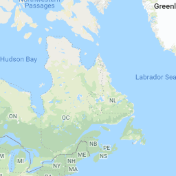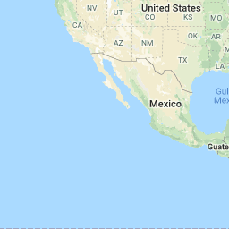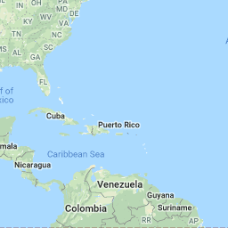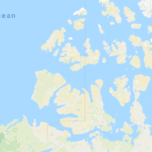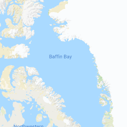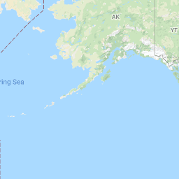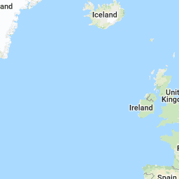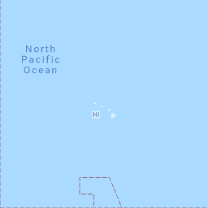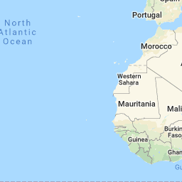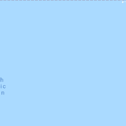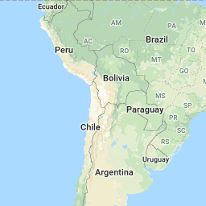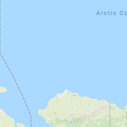
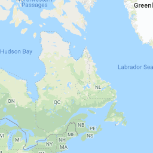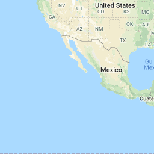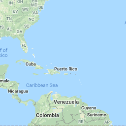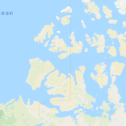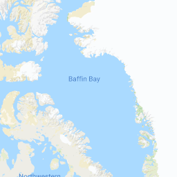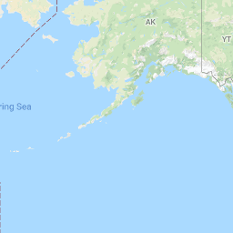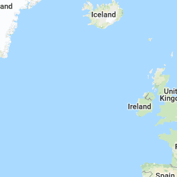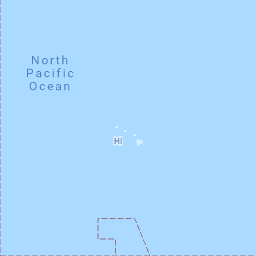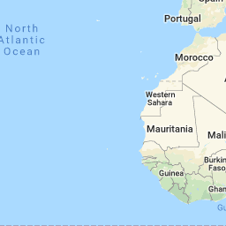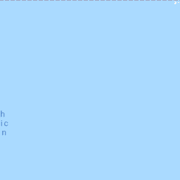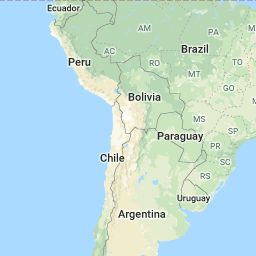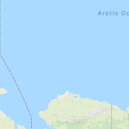 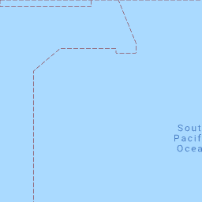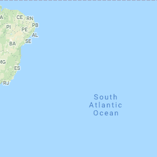
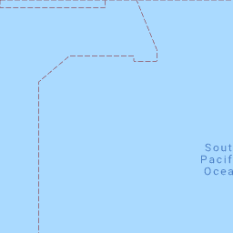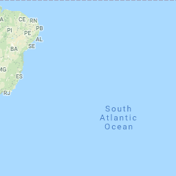{kind=link}
{kind=link}
{kind=link}
{kind=link}
{kind=link}
{kind=link}
{kind=link}
{kind=link}
{kind=link}
{kind=link}
{kind=link}
{kind=link}
{kind=link}
{kind=link}
{kind=link}
{kind=link}
{kind=link}
{kind=link}
{kind=link}
{kind=link}
{kind=link}
{kind=link}
{kind=link}
{kind=link}
{kind=link}
{kind=link}
Verified Sightings
Displaying 1 - 24 of 3261 verified sightings
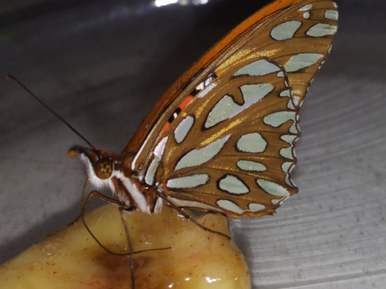
Observation date: Jan 18, 2019
Submitted by: Danielle A Miller
Region: Los Angeles County, California, United States
Verified by: Ken Davenport
Verified date: Jan 19, 2019
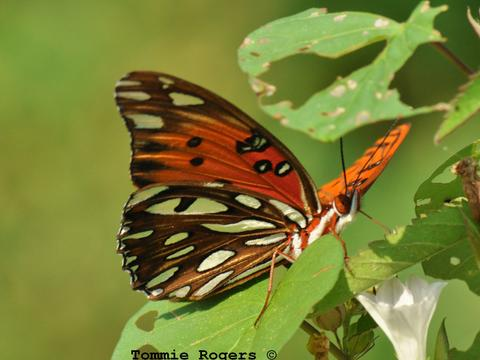
Observation date: Aug 31, 2010
Submitted by: Tommie Rogers
Region: Marion County, Tennessee, United States
Verified by: dbruce
Verified date: Jan 19, 2019
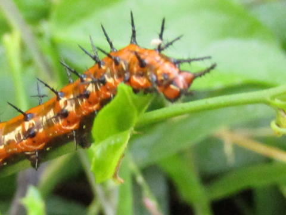
Observation date: Jan 13, 2019
Submitted by: GinaT
Region: Hillsborough County, Florida, United States
Verified by: John Calhoun
Verified date: Jan 13, 2019
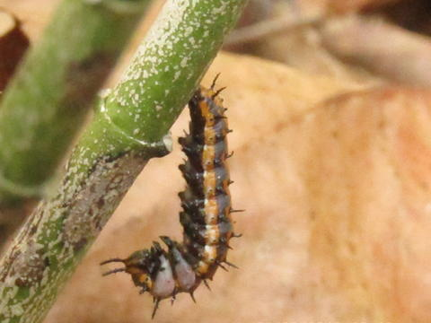
Observation date: Jan 03, 2019
Submitted by: GinaT
Region: Hillsborough County, Florida, United States
Verified by: John Calhoun
Verified date: Jan 13, 2019
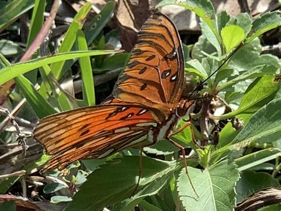
Observation date: Jan 04, 2019
Submitted by: sstatner
Region: Broward County, Florida, United States
Verified by: John Calhoun
Verified date: Jan 13, 2019
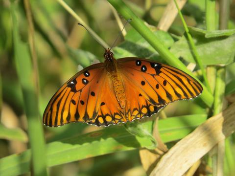
Observation date: Dec 24, 2018
Submitted by: dbrudin
Region: Palm Beach County, Florida, United States
Verified by: John Calhoun
Verified date: Jan 07, 2019
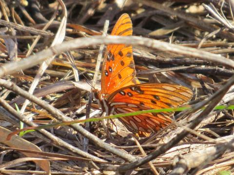
Observation date: Jan 04, 2019
Submitted by: dbrudin
Region: Palm Beach County, Florida, United States
Verified by: John Calhoun
Verified date: Jan 07, 2019
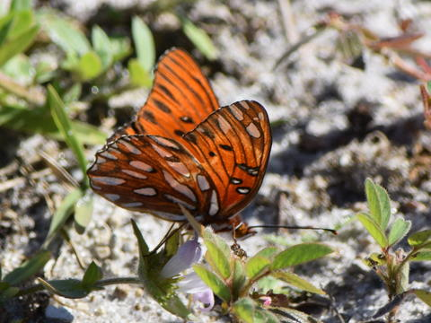
Observation date: Jan 07, 2019
Submitted by: the janitors son
Region: Brevard County, Florida, United States
Verified by: John Calhoun
Verified date: Jan 07, 2019
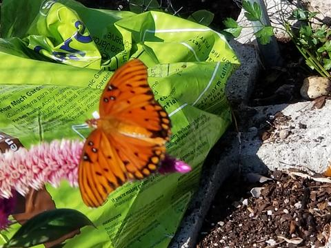
Observation date: Dec 16, 2018
Submitted by: Susan Moore
Region: Monroe County, Florida, United States
Verified by: John Calhoun
Verified date: Dec 17, 2018
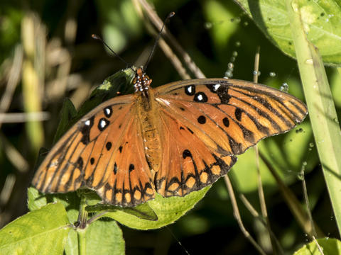
Observation date: Dec 16, 2018
Submitted by: storolaf
Region: Palm Beach County, Florida, United States
Verified by: John Calhoun
Verified date: Dec 17, 2018
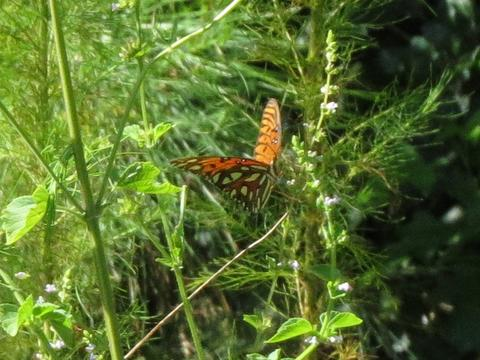
Observation date: Jul 21, 2018
Submitted by: Dennis Forsythe
Region: Liberty County, Georgia, United States
Verified by: Mikelchap
Verified date: Dec 12, 2018
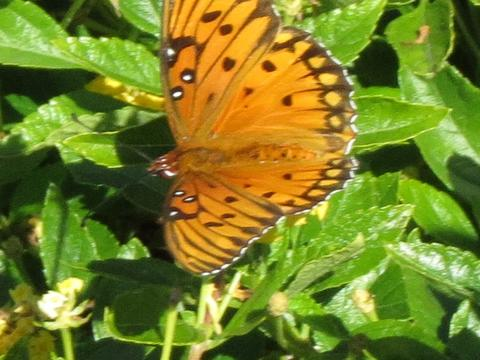
Observation date: Dec 04, 2018
Submitted by: Dennis Forsythe
Region: Georgetown County, South Carolina, United States
Verified by: Dennis Forsythe
Verified date: Dec 06, 2018
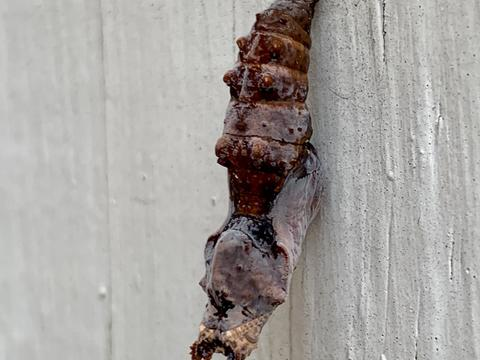
Observation date: Nov 30, 2018
Submitted by: Avaaaa
Region: Texas, Travis County, United States
Verified by: stomlins701
Verified date: Dec 04, 2018
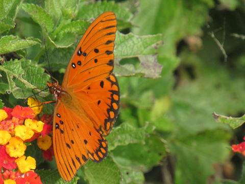
Observation date: Nov 24, 2018
Submitted by: Allen Vajdos
Region: Texas, McMullen County, United States
Verified by: stomlins701
Verified date: Dec 01, 2018
Observation date: Sep 28, 2018
Submitted by: Paul Bloch
Region: Fulton County, Georgia, United States
Verified by: Mikelchap
Verified date: Dec 01, 2018
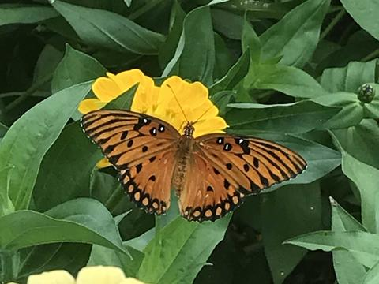
Observation date: Sep 22, 2018
Submitted by: nshree
Region: Fulton County, Georgia, United States
Verified by: Mikelchap
Verified date: Dec 01, 2018
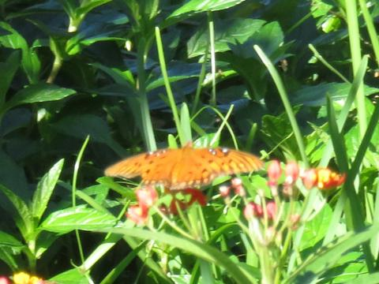
Observation date: Nov 16, 2018
Submitted by: katrohrer
Region: Lee County, Florida, United States
Verified by: John Calhoun
Verified date: Nov 28, 2018
Observation date: Nov 23, 2018
Submitted by: katrohrer
Region: Lee County, Florida, United States
Verified by: John Calhoun
Verified date: Nov 28, 2018
Observation date: Oct 12, 2018
Submitted by: treichard
Region: Orange County, California, United States
Verified by: Ken Davenport
Verified date: Nov 24, 2018
Observation date: Sep 17, 2018
Submitted by: wildman
Region: Charleston County, South Carolina, United States
Verified by: Dennis Forsythe
Verified date: Nov 23, 2018
Observation date: Nov 02, 2018
Submitted by: hiker96
Region: Cameron County, Texas, United States
Verified by: stomlins701
Verified date: Nov 21, 2018
Observation date: Nov 03, 2018
Submitted by: loyallonghorn
Region: Fort Bend County, Texas, United States
Verified by: stomlins701
Verified date: Nov 21, 2018
Observation date: Nov 03, 2018
Submitted by: loyallonghorn
Region: Fort Bend County, Texas, United States
Verified by: stomlins701
Verified date: Nov 21, 2018
Observation date: Nov 03, 2018
Submitted by: loyallonghorn
Region: Fort Bend County, Texas, United States
Verified by: stomlins701
Verified date: Nov 21, 2018
- 1 of 136
- next ›